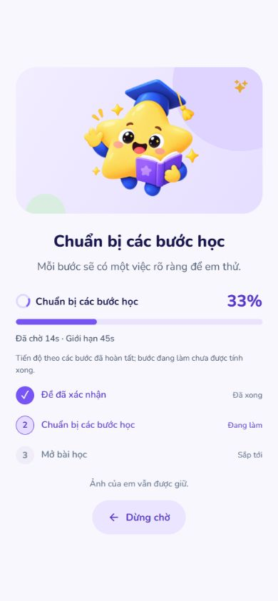
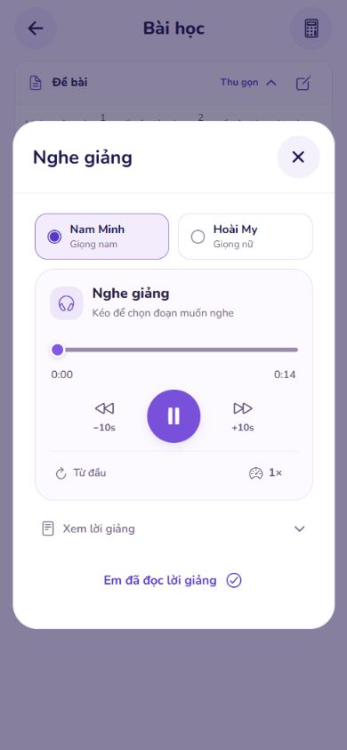
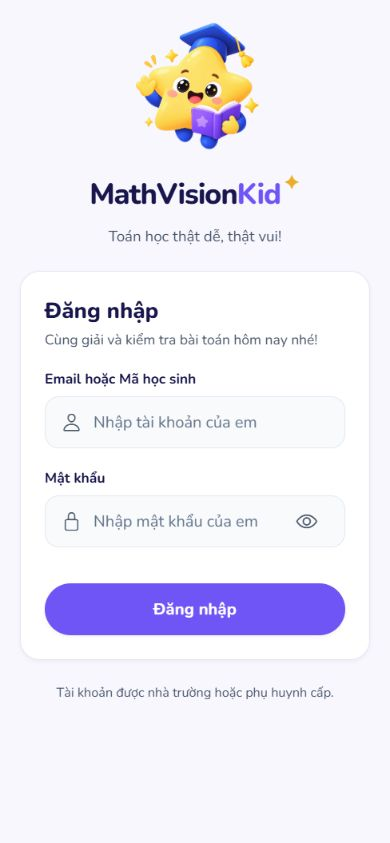
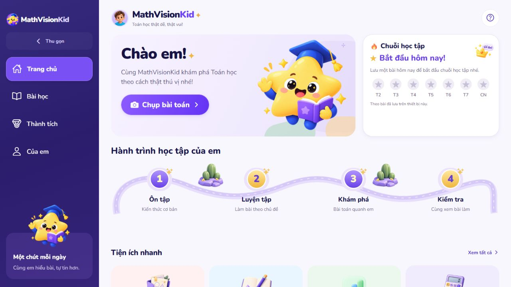
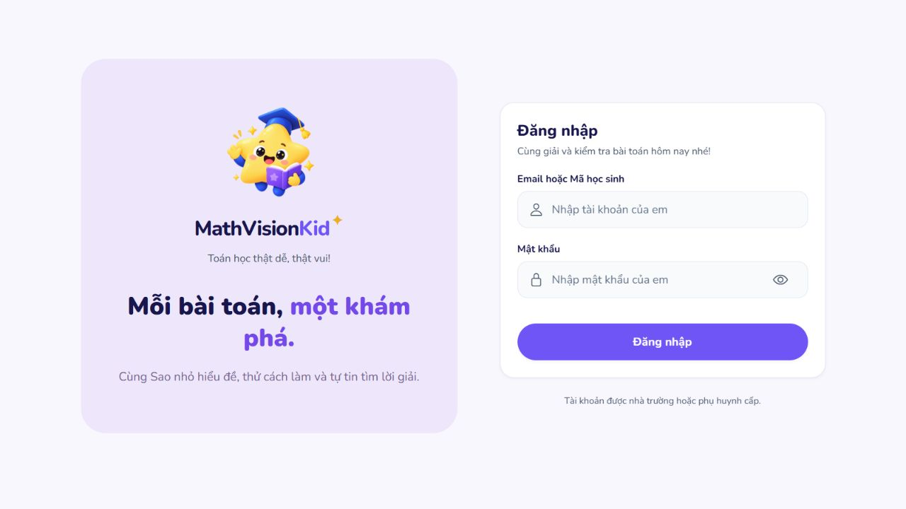

Giữ hai giọng dễ nghe.
Biết rõ đang chờ hay đã lỗi.
Nam Minh và Hoài My vẫn là hai giọng chính. Không tự đổi sang giọng khác để lấy tốc độ. Giọng dự phòng chỉ chạy khi học sinh chọn.
Tiến độ theo phần đã xongĐồng hồ & hạn chờĐăng nhập web đã vào đượcĐiều đã tìm ra và sửa
Giọng nói
Đường tạo tiếng trước đây dùng bộ đọc cục bộ. Bản tích hợp hai giọng chuyển sang online, có lượt hết giờ hoặc không nhận âm thanh. Bản cuối giữ đúng giọng đã chọn, dùng lại audio đã tạo, chia đoạn có giới hạn và cho chọn dự phòng sau lỗi.
Trạng thái chờ
Có đồng hồ, giới hạn chờ, spinner và phần trăm theo các phần hoàn tất. Tạo giọng báo số đoạn đã xong; mở tệp quá 12 giây sẽ báo lỗi. Không giả vờ nhiệm vụ đã xong chỉ vì thời gian trôi qua.
Đăng nhập web
Form đăng nhập độc lập không còn tải lại chính nó khi thiếu token. Đã kiểm tra đăng nhập, khôi phục phiên khi tải lại và đăng xuất trên ứng dụng chạy thật bằng tài khoản mẫu cục bộ.
Nghe mẫu âm thanh thật
Cùng một lời giảng tự tạo dài 322 ký tự. Đây là file do dịch vụ tạo, không phải âm thanh minh họa giả.
Nam Minh · Giọng nam chính
Lượt đo cuối: 1,359 giây tạo/nhận ở harness server; audio dài 24,648 giây.
Hoài My · Giọng nữ chính
Lượt đo cuối: 1,578 giây; audio dài 25,008 giây.
Giọng dự phòng · Chỉ khi chọn
Cố tình làm online lỗi, rồi chủ động yêu cầu dự phòng: thành công trong 1,438 giây. Âm sắc khác hai giọng chính. Cache không trộn các chế độ.
Các số đo là mẫu chẩn đoán tại thời điểm chạy, không phải bảo đảm mọi lần đều dưới hai giây. Chưa tính mạng, giải mã hoặc loa điện thoại. Chưa kiểm thử trên Android vật lý trong ảnh người dùng.
Ảnh giao diện từ dự án đang chạy
Viewport điện thoại 390 × 844 trong trình duyệt. API đăng nhập/bài học/giọng chạy thật; đề là nội dung tự tạo. Đây không phải ảnh chụp điện thoại vật lý.
Đồng hồ đang chờ tạo bài

33% là một trong ba bước hoàn tất. Dịch vụ soạn bài chưa có phần trăm xử lý nội bộ; đồng hồ vẫn chạy, không bịa số tăng.
Giọng đã mở và phát được

Đã kiểm tra chuyển trạng thái phát, hoàn tất và tua bằng thanh trượt. Không suy thành bằng chứng đã nghe loa thật.
Form đăng nhập đã mở được

Cuối kiểm thử đã đăng xuất tài khoản mẫu. Form không còn lặp tải lại.
Xem trang chủ sau đăng nhập và form desktop


Kiểm chứng
| Nhóm | Kết quả |
|---|---|
| Python | 58/58 |
| Student | 112/112 · 9 suite |
| Phiên web | 8/8 |
| Backend | 129/129 |
| TypeScript / ESLint / build | Đạt; export web và Android/Hermes |
Số đo giọng & kiểm tra lựa chọn dự phòng · Nhận dạng lại mẫu dự phòng · HTTP đăng nhập và trạng thái phiên · Tổng hợp bằng chứng
Chưa commit/push, chưa thay model OCR. Không tuyên bố đã hoàn hảo trong mọi mạng, mọi thiết bị hoặc khi nhiều lớp học dùng đồng thời.
Skills Applied
ponytail — .agents/skills/ponytail/SKILL.md: tái dùng bộ đọc, cache và player hiện có.vercel-react-best-practices — .agents/skills/react-best-practices/SKILL.md: hủy tải, timer và xác thực bất đồng bộ.ui-ux-pro-max — .agents/skills/ui-ux-pro-max/SKILL.md: trạng thái chờ, phần trăm có nguồn, lỗi và bố cục điện thoại.